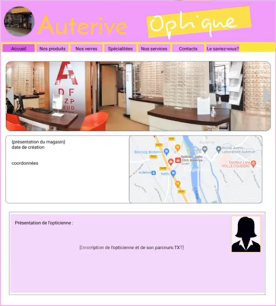
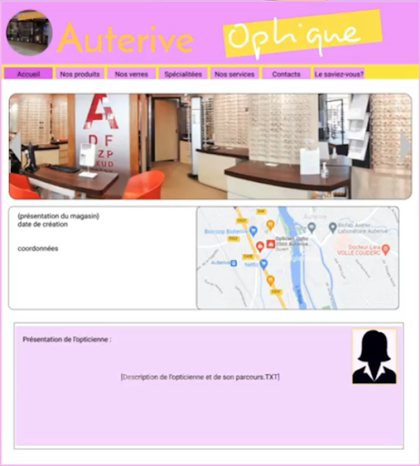

Compétence : Conduire un projet
>Dans cette compétence le but était d'apprendre comment organiser un projet de façon temporel et organisationnelle, pour illustrer ceci je vais vous montrer mon évolution au cours de mes années au sein de l'IUT à l'aide de projets qui me serviront d'exemples.
SAÉ (situation d'apprentissage et d'évaluation) : Recueil des besoins
Le Niveau 1 de la compétence est de savoir :
- Appréhende les besoins du client et de l’utilisateur
- Mettre en place les outils de gestion de projet
- Identifier les acteurs et les différentes phases d’un cycles de développement
Contexte / Objectifs :
Lors de cette SAÉ il nous était demandé de nous renseigner auprès d'un client réel ( une opticienne dans nôtre cas ), et de définir ses besoins pour une site web hypothétique, et ensuite faire un cahier des charges pour dresser une maquette de site adaptée aux besoins de nôtre cliente.
Difficultés et solutions
La principale difficulté lors de ce projet à été la communication avec le client qui s'est faite majoritairement pas e-mail, mais avec des délais assez long, ralentissant le projet.
Résultats:
 

SAÉ : Gestion d’un projet
Le Niveau 2 de la compétence est de savoir :
- Identifier les processus présents dans une organisation en vue d’améliorer les systèmes d’information
- Formaliser les besoins du client et de l’utilisateur
- Identifier les critères de faisabilité d’un projet informatique
- Définir et mettre en oeuvre une démarche de suivi de projet
Contexte / Objectifs :
Le but de cette SAÉ était de mettre en place un gantt de prévision de projet sur le temps, identifier clairement des tâches à réaliser durant le projet et la mise en place d'une cadence de travail à suivre